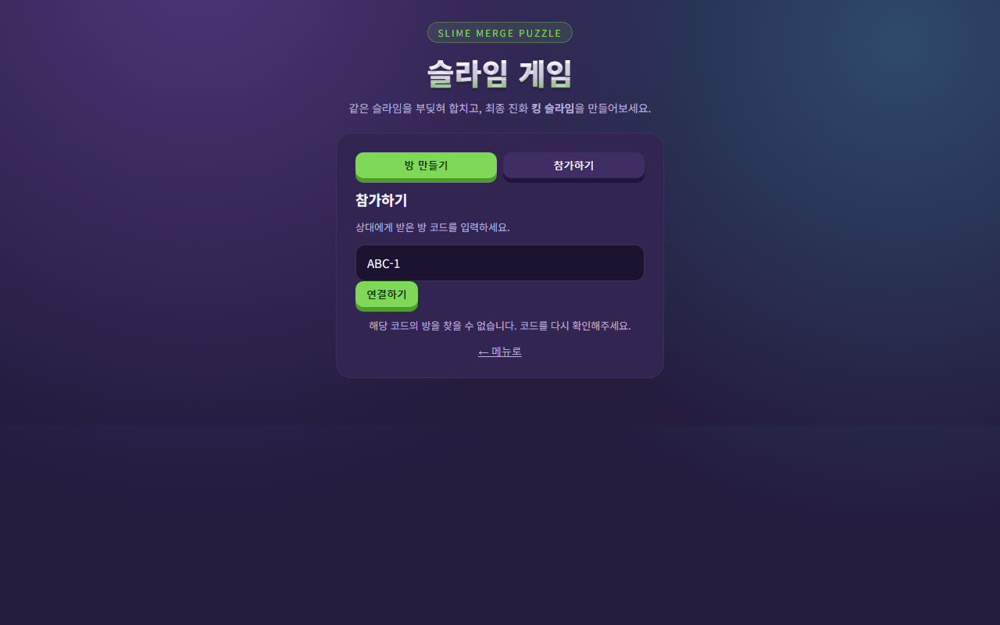

슬라임 게임 자동 테스트 결과
실행: 2026-11-02 18:51 · 도구: Playwright(Chromium) · 대상: slimegame.html · 리포트 생성: 2026-11-02
216 / 71자동화한 TC / 전체 TC (+탐색 중 추가 1)
202테스트 수 (TC 여러 개를 묶은 것 포함)
200통과
2실패
700초전체 실행 시간
TC 출처: TC/슬라임게임_TC.xlsx (작성자 LKM, 공통 15건 + 게임플레이 56건)
실패 상세
[SG-1010] 참가하기 — 없는 코드 뒤 재시도 버튼
Error: expect(locator).toBeVisible() failed
Locator: locator('#multi-status').getByRole('button', { name: '다시 연결 시도' })
Expected: visible
Timeout: 2000ms
Error: element(s) not found
Call log:
[SG-1506][공통-12] 외부 리소스·반응형 — 모바일 360 보드 잘림
Error: expect(received).toBeLessThanOrEqual(expected) Expected: <= 360 Received: 370

자동화한 TC (217건)
검토 칸: review 칸은 LKM이 '확인함' 또는 '버림'으로 바꾼다. AI가 고른 것은 처음에 모두 '초안'.
| TC | 내용 | 근거 | 결과 | 시간 | 검토 |
|---|---|---|---|---|---|
| 공통-3 | 물리 엔진 로드 후 콘솔 오류 없음 | 통과 | 5.9초 | 초안 | |
| 공통-5 | 외부 스크립트 차단 시 흰 화면 없이 메뉴 유지 | 통과 | 2.5초 | 초안 | |
| 공통-7 | 타이틀·서브 카피 노출 | 통과 | 1.6초 | 초안 | |
| 공통-8 | 솔로 모드 진입 시 새 보드 초기화 | 통과 | 3.0초 | 초안 | |
| 공통-9 | 멀티 모드 진입 시 방 만들기 탭 기본 활성 | 통과 | 2.1초 | 초안 | |
| 공통-10 | ← 메뉴로 링크로 메인 메뉴 복귀 | 통과 | 2.2초 | 초안 | |
| 공통-11 | 데스크톱(720px 초과) 모드 카드 가로 배치 | 통과 | 2.5초 | 초안 | |
| 공통-12 | 모바일(720px 이하) 모드 카드 세로 배치 | 실패 | 1.2초 | 초안 | |
| 공통-13 | 결과 창은 바깥 클릭·Esc로 닫히지 않음 | 통과 | 55.3초 | 초안 | |
| 플레이-3 | 캔버스 클릭으로 드롭 | 통과 | 3.8초 | 초안 | |
| 플레이-4 | 스페이스바로 드롭 | 통과 | 4.6초 | 초안 | |
| 플레이-5 | 드롭 쿨다운(0.42초) 내 추가 입력 무시 | 통과 | 2.5초 | 초안 | |
| 플레이-6 | 드롭 후 다음 슬라임 정보 갱신 | 통과 | 4.6초 | 초안 | |
| 플레이-7 | 같은 단계 2개 충돌 시 한 단계 위로 병합 | 통과 | 5.3초 | 초안 | |
| 플레이-8 | 병합 점수 = (n+1)(n+2)/2×8 (2단계 24점) | 통과 | 5.3초 | 초안 | |
| 플레이-10 | 새 최고 단계 생성 시 진화 체인 강조 | 통과 | 5.3초 | 초안 | |
| 플레이-12 | 게임 오버 시 최고 기록 갱신 | 통과 | 55.3초 | 초안 | |
| 플레이-16 | 경고선 침범 지속 시 게임 오버 결과 창 | 통과 | 55.3초 | 초안 | |
| 플레이-19 | [다시하기]로 점수 0 새 게임 | 통과 | 55.3초 | 초안 | |
| 플레이-20 | [메뉴로]로 메인 메뉴 복귀 | 통과 | 59.4초 | 초안 | |
| 플레이-24 | [참가하기] 탭 전환 시 입력창 노출 | 통과 | 2.2초 | 초안 | |
| 플레이-26 | 빈 코드로 [연결하기] 시 안내 문구 | 통과 | 3.8초 | 초안 | |
| 탐색-1 | 게임 오버 뒤 보드 점수가 결과 창 점수와 같고 더 오르지 않음 (자동 테스트 중 발견, 기존 TC에 추가 제안) | 통과 | 179.1초 | 초안 | |
| SG-101 | 화면 구성 — 탭 제목 | G01 메인 메뉴 화면 (제목·모드 카드) | 통과 | 1.3초 | 초안 |
| SG-102 | 화면 구성 — 상단 라벨 | G01 메인 메뉴 화면 (제목·모드 카드) | 통과 | 1.2초 | 초안 |
| SG-103 | 화면 구성 — 서브 카피 | G01 메인 메뉴 화면 (제목·모드 카드) | 통과 | 1.2초 | 초안 |
| SG-104 | 화면 구성 — 솔로 카드 제목 | G01 메인 메뉴 화면 (제목·모드 카드) | 통과 | 1.2초 | 초안 |
| SG-105 | 화면 구성 — 솔로 카드 아이콘 | G01 메인 메뉴 화면 (제목·모드 카드) | 통과 | 1.2초 | 초안 |
| SG-106 | 화면 구성 — 솔로 카드 설명 | G01 메인 메뉴 화면 (제목·모드 카드) | 통과 | 1.2초 | 초안 |
| SG-107 | 화면 구성 — 솔로 카드 태그 | G01 메인 메뉴 화면 (제목·모드 카드) | 통과 | 1.1초 | 초안 |
| SG-108 | 화면 구성 — 멀티 카드 제목 | G01 메인 메뉴 화면 (제목·모드 카드) | 통과 | 1.2초 | 초안 |
| SG-109 | 화면 구성 — 멀티 카드 아이콘 | G01 메인 메뉴 화면 (제목·모드 카드) | 통과 | 1.2초 | 초안 |
| SG-110 | 화면 구성 — 멀티 카드 설명 | G01 메인 메뉴 화면 (제목·모드 카드) | 통과 | 1.2초 | 초안 |
| SG-111 | 화면 구성 — 멀티 카드 태그 | G01 메인 메뉴 화면 (제목·모드 카드) | 통과 | 1.2초 | 초안 |
| SG-112 | 화면 구성 — 다른 화면 숨김 | G01 메인 메뉴 화면 (제목·모드 카드) | 통과 | 1.2초 | 초안 |
| SG-113 | 화면 구성 — 카드 마우스 올림 | G01 메인 메뉴 화면 (제목·모드 카드) | 통과 | 1.4초 | 초안 |
| SG-201 | 화면 구성 — 점수 라벨 | G02 솔로 화면 구성·버튼 | 통과 | 1.4초 | 초안 |
| SG-202 | 화면 구성 — 최고 기록 라벨 | G02 솔로 화면 구성·버튼 | 통과 | 1.4초 | 초안 |
| SG-203 | 화면 구성 — 최고 기록 첫 값 | G02 솔로 화면 구성·버튼 | 통과 | 1.3초 | 초안 |
| SG-204 | 화면 구성 — 다음 슬라임 라벨 | G02 솔로 화면 구성·버튼 | 통과 | 1.3초 | 초안 |
| SG-205 | 화면 구성 — 다음 슬라임 첫 값 | G02 솔로 화면 구성·버튼 | 통과 | 1.2초 | 초안 |
| SG-206 | 화면 구성 — [↺ 다시하기] 노출 | G02 솔로 화면 구성·버튼 | 통과 | 1.3초 | 초안 |
| SG-207 | 화면 구성 — [← 메뉴로] 노출 | G02 솔로 화면 구성·버튼 | 통과 | 1.3초 | 초안 |
| SG-208 | 화면 구성 — 진화 체인 제목 | G02 솔로 화면 구성·버튼 | 통과 | 1.3초 | 초안 |
| SG-209 | 화면 구성 — 보드 크기 | G02 솔로 화면 구성·버튼 | 통과 | 1.3초 | 초안 |
| SG-210 | 화면 구성 — 경고 테두리 없음 | G02 솔로 화면 구성·버튼 | 통과 | 1.3초 | 초안 |
| SG-211 | 화면 구성 — [↺ 다시하기] 점수 | G02 솔로 화면 구성·버튼 | 통과 | 1.4초 | 초안 |
| SG-212 | 화면 구성 — [↺ 다시하기] 보드 | G02 솔로 화면 구성·버튼 | 통과 | 3.0초 | 초안 |
| SG-213 | 화면 구성 — [↺ 다시하기] 최고 기록 | G02 솔로 화면 구성·버튼 | 통과 | 4.1초 | 초안 |
| SG-214 | 화면 구성 — 메뉴 복귀 뒤 스페이스바 | G02 솔로 화면 구성·버튼 | 통과 | 1.7초 | 초안 |
| SG-215 | 화면 구성 — 메뉴 복귀 뒤 재진입 | G02 솔로 화면 구성·버튼 | 통과 | 2.9초 | 초안 |
| SG-301 | 조작/드롭 — 낙하 단계 1 | G03 드롭 조작 (낙하 단계·커서·쿨다운·터치) | 통과 | 1.3초 | 초안 |
| SG-302 | 조작/드롭 — 낙하 단계 2 | G03 드롭 조작 (낙하 단계·커서·쿨다운·터치) | 통과 | 1.3초 | 초안 |
| SG-303 | 조작/드롭 — 낙하 단계 3 | G03 드롭 조작 (낙하 단계·커서·쿨다운·터치) | 통과 | 1.3초 | 초안 |
| SG-304 | 조작/드롭 — 낙하 단계 4 | G03 드롭 조작 (낙하 단계·커서·쿨다운·터치) | 통과 | 1.3초 | 초안 |
| SG-305 | 조작/드롭 — 낙하 단계 5 | G03 드롭 조작 (낙하 단계·커서·쿨다운·터치) | 통과 | 1.4초 | 초안 |
| SG-306 | 조작/드롭 — 낙하 단계 상한 | G03 드롭 조작 (낙하 단계·커서·쿨다운·터치) | 통과 | 1.3초 | 초안 |
| SG-307 | 조작/드롭 — 예고 색 1단계 | G03 드롭 조작 (낙하 단계·커서·쿨다운·터치) | 통과 | 1.3초 | 초안 |
| SG-308 | 조작/드롭 — 예고 색 3단계 | G03 드롭 조작 (낙하 단계·커서·쿨다운·터치) | 통과 | 1.3초 | 초안 |
| SG-309 | 조작/드롭 — 예고 색 4단계 | G03 드롭 조작 (낙하 단계·커서·쿨다운·터치) | 통과 | 1.3초 | 초안 |
| SG-310 | 조작/드롭 — 예고 색 5단계 | G03 드롭 조작 (낙하 단계·커서·쿨다운·터치) | 통과 | 1.3초 | 초안 |
| SG-311 | 조작/드롭 — 드롭 위치 | G03 드롭 조작 (낙하 단계·커서·쿨다운·터치) | 통과 | 1.4초 | 초안 |
| SG-312 | 조작/드롭 — 왼쪽 벽 클램프 | G03 드롭 조작 (낙하 단계·커서·쿨다운·터치) | 통과 | 1.4초 | 초안 |
| SG-313 | 조작/드롭 — 오른쪽 벽 클램프 | G03 드롭 조작 (낙하 단계·커서·쿨다운·터치) | 통과 | 1.5초 | 초안 |
| SG-314 | 조작/드롭 — 큰 슬라임 클램프 | G03 드롭 조작 (낙하 단계·커서·쿨다운·터치) | 통과 | 1.6초 | 초안 |
| SG-315 | 조작/드롭 — 드롭 높이 | G03 드롭 조작 (낙하 단계·커서·쿨다운·터치) | 통과 | 1.4초 | 초안 |
| SG-316 | 조작/드롭 — 쿨다운 안 (0.3초) | G03 드롭 조작 (낙하 단계·커서·쿨다운·터치) | 통과 | 1.7초 | 초안 |
| SG-317 | 조작/드롭 — 쿨다운 뒤 (0.55초) | G03 드롭 조작 (낙하 단계·커서·쿨다운·터치) | 통과 | 2.0초 | 초안 |
| SG-318 | 조작/드롭 — 클릭·스페이스 공용 쿨다운 | G03 드롭 조작 (낙하 단계·커서·쿨다운·터치) | 통과 | 1.5초 | 초안 |
| SG-319 | 조작/드롭 — 게임 오버 뒤 스페이스바 | G03 드롭 조작 (낙하 단계·커서·쿨다운·터치) | 통과 | 3.9초 | 초안 |
| SG-320 | 조작/드롭 — 게임 오버 뒤 클릭 | G03 드롭 조작 (낙하 단계·커서·쿨다운·터치) | 통과 | 4.4초 | 초안 |
| SG-321 | 조작/드롭 — 터치 탭 드롭 | G03 드롭 조작 (낙하 단계·커서·쿨다운·터치) | 통과 | 1.7초 | 초안 |
| SG-322 | 조작/드롭 — 터치 이동 | G03 드롭 조작 (낙하 단계·커서·쿨다운·터치) | 통과 | 1.5초 | 초안 |
| SG-323 | 조작/드롭 — 스페이스바 스크롤 막음 | G03 드롭 조작 (낙하 단계·커서·쿨다운·터치) | 통과 | 1.6초 | 초안 |
| SG-401 | 병합·점수 — 2+2단계 병합 점수 | G04 병합·점수 (단계별 점수 SCORES) | 통과 | 1.5초 | 초안 |
| SG-402 | 병합·점수 — 3+3단계 병합 점수 | G04 병합·점수 (단계별 점수 SCORES) | 통과 | 1.4초 | 초안 |
| SG-403 | 병합·점수 — 4+4단계 병합 점수 | G04 병합·점수 (단계별 점수 SCORES) | 통과 | 1.4초 | 초안 |
| SG-404 | 병합·점수 — 5+5단계 병합 점수 | G04 병합·점수 (단계별 점수 SCORES) | 통과 | 1.3초 | 초안 |
| SG-405 | 병합·점수 — 6+6단계 병합 점수 | G04 병합·점수 (단계별 점수 SCORES) | 통과 | 1.4초 | 초안 |
| SG-406 | 병합·점수 — 7+7단계 병합 점수 | G04 병합·점수 (단계별 점수 SCORES) | 통과 | 1.4초 | 초안 |
| SG-407 | 병합·점수 — 8+8단계 병합 점수 | G04 병합·점수 (단계별 점수 SCORES) | 통과 | 1.4초 | 초안 |
| SG-408 | 병합·점수 — 9+9단계 병합 점수 | G04 병합·점수 (단계별 점수 SCORES) | 통과 | 1.4초 | 초안 |
| SG-409 | 병합·점수 — 10+10단계 병합 점수 | G04 병합·점수 (단계별 점수 SCORES) | 통과 | 1.4초 | 초안 |
| SG-410 | 병합·점수 — 킹+킹 소멸 | G04 병합·점수 (단계별 점수 SCORES) | 통과 | 1.4초 | 초안 |
| SG-411 | 병합·점수 — 킹+킹 점수 | G04 병합·점수 (단계별 점수 SCORES) | 통과 | 1.4초 | 초안 |
| SG-412 | 병합·점수 — 다른 단계는 안 합쳐짐 | G04 병합·점수 (단계별 점수 SCORES) | 통과 | 2.9초 | 초안 |
| SG-413 | 병합·점수 — 병합 위치 | G04 병합·점수 (단계별 점수 SCORES) | 통과 | 1.6초 | 초안 |
| SG-414 | 병합·점수 — 병합 뒤 튀어오름 | G04 병합·점수 (단계별 점수 SCORES) | 통과 | 1.7초 | 초안 |
| SG-415 | 병합·점수 — 동시 병합 2쌍 | G04 병합·점수 (단계별 점수 SCORES) | 통과 | 1.5초 | 초안 |
| SG-416 | 병합·점수 — 같은 단계 3개 동시 | G04 병합·점수 (단계별 점수 SCORES) | 통과 | 3.0초 | 초안 |
| SG-417 | 병합·점수 — 솔로 킹 완성 | G04 병합·점수 (단계별 점수 SCORES) | 통과 | 3.5초 | 초안 |
| SG-418 | 병합·점수 — 점수 누적 | G04 병합·점수 (단계별 점수 SCORES) | 통과 | 1.3초 | 초안 |
| SG-501 | 진화 체인 — 1단계 줄 | G05 진화 체인 패널 | 통과 | 1.4초 | 초안 |
| SG-502 | 진화 체인 — 2단계 줄 | G05 진화 체인 패널 | 통과 | 1.4초 | 초안 |
| SG-503 | 진화 체인 — 3단계 줄 | G05 진화 체인 패널 | 통과 | 1.3초 | 초안 |
| SG-504 | 진화 체인 — 4단계 줄 | G05 진화 체인 패널 | 통과 | 1.4초 | 초안 |
| SG-505 | 진화 체인 — 5단계 줄 | G05 진화 체인 패널 | 통과 | 1.3초 | 초안 |
| SG-506 | 진화 체인 — 6단계 줄 | G05 진화 체인 패널 | 통과 | 1.4초 | 초안 |
| SG-507 | 진화 체인 — 7단계 줄 | G05 진화 체인 패널 | 통과 | 1.3초 | 초안 |
| SG-508 | 진화 체인 — 8단계 줄 | G05 진화 체인 패널 | 통과 | 1.2초 | 초안 |
| SG-509 | 진화 체인 — 9단계 줄 | G05 진화 체인 패널 | 통과 | 1.3초 | 초안 |
| SG-510 | 진화 체인 — 10단계 줄 | G05 진화 체인 패널 | 통과 | 1.3초 | 초안 |
| SG-511 | 진화 체인 — 11단계 줄 | G05 진화 체인 패널 | 통과 | 1.3초 | 초안 |
| SG-512 | 진화 체인 — 도달 단계 강조 | G05 진화 체인 패널 | 통과 | 1.3초 | 초안 |
| SG-513 | 진화 체인 — 미도달 단계 | G05 진화 체인 패널 | 통과 | 1.3초 | 초안 |
| SG-514 | 진화 체인 — 낮은 단계 다시 생성 | G05 진화 체인 패널 | 통과 | 1.4초 | 초안 |
| SG-515 | 진화 체인 — 킹 도달 강조 | G05 진화 체인 패널 | 통과 | 1.3초 | 초안 |
| SG-516 | 진화 체인 — 다시하기 뒤 초기화 | G05 진화 체인 패널 | 통과 | 1.3초 | 초안 |
| SG-601 | 경고선·게임 오버 — 침범 59% | G06 경고선·게임 오버 (60%·1.6초·0.55초) | 통과 | 3.2초 | 초안 |
| SG-602 | 경고선·게임 오버 — 침범 60% | G06 경고선·게임 오버 (60%·1.6초·0.55초) | 통과 | 1.9초 | 초안 |
| SG-603 | 경고선·게임 오버 — 침범 61% | G06 경고선·게임 오버 (60%·1.6초·0.55초) | 통과 | 2.0초 | 초안 |
| SG-604 | 경고선·게임 오버 — 1.6초 전 | G06 경고선·게임 오버 (60%·1.6초·0.55초) | 통과 | 2.6초 | 초안 |
| SG-605 | 경고선·게임 오버 — 1.6초 지남 | G06 경고선·게임 오버 (60%·1.6초·0.55초) | 통과 | 3.7초 | 초안 |
| SG-606 | 경고선·게임 오버 — 위험 해제 | G06 경고선·게임 오버 (60%·1.6초·0.55초) | 통과 | 1.3초 | 초안 |
| SG-607 | 경고선·게임 오버 — 위험 시간 다시 셈 | G06 경고선·게임 오버 (60%·1.6초·0.55초) | 통과 | 3.5초 | 초안 |
| SG-608 | 경고선·게임 오버 — 생성 유예 0.55초 안 | G06 경고선·게임 오버 (60%·1.6초·0.55초) | 통과 | 1.6초 | 초안 |
| SG-609 | 경고선·게임 오버 — 생성 유예 지남 | G06 경고선·게임 오버 (60%·1.6초·0.55초) | 통과 | 2.4초 | 초안 |
| SG-610 | 경고선·게임 오버 — 경고선 빨간색 | G06 경고선·게임 오버 (60%·1.6초·0.55초) | 통과 | 1.3초 | 초안 |
| SG-611 | 경고선·게임 오버 — 평소 경고선 | G06 경고선·게임 오버 (60%·1.6초·0.55초) | 통과 | 1.6초 | 초안 |
| SG-701 | 결과 창 — 이모지 | G07 결과 창 (솔로) | 통과 | 3.1초 | 초안 |
| SG-702 | 결과 창 — 설명 문구 | G07 결과 창 (솔로) | 통과 | 3.2초 | 초안 |
| SG-703 | 결과 창 — 최종 점수 | G07 결과 창 (솔로) | 통과 | 3.2초 | 초안 |
| SG-704 | 결과 창 — [다시하기] 노출 | G07 결과 창 (솔로) | 통과 | 3.2초 | 초안 |
| SG-705 | 결과 창 — [메뉴로] 노출 | G07 결과 창 (솔로) | 통과 | 3.6초 | 초안 |
| SG-801 | 최고 기록 — 첫 기록 | G08 최고 기록 (이번 세션) | 통과 | 3.2초 | 초안 |
| SG-802 | 최고 기록 — 낮은 점수 | G08 최고 기록 (이번 세션) | 통과 | 5.3초 | 초안 |
| SG-803 | 최고 기록 — 높은 점수 | G08 최고 기록 (이번 세션) | 통과 | 6.2초 | 초안 |
| SG-804 | 최고 기록 — 같은 점수 | G08 최고 기록 (이번 세션) | 통과 | 6.4초 | 초안 |
| SG-805 | 최고 기록 — 새로고침 | G08 최고 기록 (이번 세션) | 통과 | 3.3초 | 초안 |
| SG-806 | 최고 기록 — 메뉴 다녀오기 | G08 최고 기록 (이번 세션) | 통과 | 3.9초 | 초안 |
| SG-901 | 방 만들기 — [방 만들기] 탭 노출 | G09 멀티 설정 — 방 만들기 | 통과 | 1.3초 | 초안 |
| SG-902 | 방 만들기 — [참가하기] 탭 노출 | G09 멀티 설정 — 방 만들기 | 통과 | 1.2초 | 초안 |
| SG-903 | 방 만들기 — 안내 문구 | G09 멀티 설정 — 방 만들기 | 통과 | 1.2초 | 초안 |
| SG-904 | 방 만들기 — 코드 받기 전 | G09 멀티 설정 — 방 만들기 | 통과 | 1.2초 | 초안 |
| SG-905 | 방 만들기 — 대기 문구 | G09 멀티 설정 — 방 만들기 | 통과 | 1.2초 | 초안 |
| SG-906 | 방 만들기 — 코드 표시 | G09 멀티 설정 — 방 만들기 | 통과 | 1.2초 | 초안 |
| SG-907 | 방 만들기 — 코드 생성 완료 문구 | G09 멀티 설정 — 방 만들기 | 통과 | 1.2초 | 초안 |
| SG-908 | 방 만들기 — [코드 복사] 문구 | G09 멀티 설정 — 방 만들기 | 통과 | 1.3초 | 초안 |
| SG-909 | 방 만들기 — [코드 복사] 클립보드 | G09 멀티 설정 — 방 만들기 | 통과 | 1.2초 | 초안 |
| SG-910 | 방 만들기 — 서버 오류 | G09 멀티 설정 — 방 만들기 | 통과 | 1.2초 | 초안 |
| SG-911 | 방 만들기 — [방 만들기] 다시 누름 | G09 멀티 설정 — 방 만들기 | 통과 | 1.2초 | 초안 |
| SG-912 | 방 만들기 — [참가하기]로 바꾸면 방 닫힘 | G09 멀티 설정 — 방 만들기 | 통과 | 1.3초 | 초안 |
| SG-913 | 방 만들기 — [← 메뉴로] 화면 | G09 멀티 설정 — 방 만들기 | 통과 | 1.3초 | 초안 |
| SG-914 | 방 만들기 — [← 메뉴로] 연결 종료 | G09 멀티 설정 — 방 만들기 | 통과 | 1.4초 | 초안 |
| SG-915 | 방 만들기 — 상대 접속 | G09 멀티 설정 — 방 만들기 | 통과 | 1.3초 | 초안 |
| SG-1001 | 참가하기 — 안내 문구 | G10 멀티 설정 — 참가하기·연결 문구 | 통과 | 1.4초 | 초안 |
| SG-1002 | 참가하기 — 입력칸 안내 글자 | G10 멀티 설정 — 참가하기·연결 문구 | 통과 | 1.4초 | 초안 |
| SG-1003 | 참가하기 — [연결하기] 노출 | G10 멀티 설정 — 참가하기·연결 문구 | 통과 | 1.3초 | 초안 |
| SG-1004 | 참가하기 — 1/3 문구 | G10 멀티 설정 — 참가하기·연결 문구 | 통과 | 1.4초 | 초안 |
| SG-1005 | 참가하기 — 2/3 문구 | G10 멀티 설정 — 참가하기·연결 문구 | 통과 | 1.4초 | 초안 |
| SG-1006 | 참가하기 — 연결 완료 | G10 멀티 설정 — 참가하기·연결 문구 | 통과 | 1.7초 | 초안 |
| SG-1007 | 참가하기 — 코드 앞뒤 공백 | G10 멀티 설정 — 참가하기·연결 문구 | 통과 | 1.4초 | 초안 |
| SG-1008 | 참가하기 — 없는 코드 | G10 멀티 설정 — 참가하기·연결 문구 | 통과 | 1.5초 | 초안 |
| SG-1009 | 참가하기 — 그 밖의 오류 | G10 멀티 설정 — 참가하기·연결 문구 | 통과 | 1.5초 | 초안 |
| SG-1010 | 참가하기 — 없는 코드 뒤 재시도 버튼 | G10 멀티 설정 — 참가하기·연결 문구 | 실패 | 3.4초 | 초안 |
| SG-1011 | 참가하기 — 오류 뒤 다시 [연결하기] | G10 멀티 설정 — 참가하기·연결 문구 | 통과 | 1.7초 | 초안 |
| SG-1012 | 참가하기 — 빈 코드는 연결 안 함 | G10 멀티 설정 — 참가하기·연결 문구 | 통과 | 2.0초 | 초안 |
| SG-1101 | 시간 초과 — 15.9초 | G11 연결 시간 초과(16초)·다시 연결 | 통과 | 1.6초 | 초안 |
| SG-1102 | 시간 초과 — 16초 지남 | G11 연결 시간 초과(16초)·다시 연결 | 통과 | 1.9초 | 초안 |
| SG-1103 | 시간 초과 — 재시도 버튼 | G11 연결 시간 초과(16초)·다시 연결 | 통과 | 1.6초 | 초안 |
| SG-1104 | 시간 초과 — 재시도 문구 | G11 연결 시간 초과(16초)·다시 연결 | 통과 | 1.4초 | 초안 |
| SG-1105 | 시간 초과 — 재시도 코드 | G11 연결 시간 초과(16초)·다시 연결 | 통과 | 1.4초 | 초안 |
| SG-1106 | 시간 초과 — 연결되면 시간 초과 없음 | G11 연결 시간 초과(16초)·다시 연결 | 통과 | 44.3초 | 초안 |
| SG-1107 | 시간 초과 — 시간 초과 시 연결 정리 | G11 연결 시간 초과(16초)·다시 연결 | 통과 | 1.2초 | 초안 |
| SG-1201 | 대결 화면 — 내 보드 이름 | G12 멀티 대결 화면·상태 주고받기 | 통과 | 1.5초 | 초안 |
| SG-1202 | 대결 화면 — 상대 보드 이름 | G12 멀티 대결 화면·상태 주고받기 | 통과 | 1.7초 | 초안 |
| SG-1203 | 대결 화면 — VS 표시 | G12 멀티 대결 화면·상태 주고받기 | 통과 | 1.6초 | 초안 |
| SG-1204 | 대결 화면 — 상대 대기 문구 | G12 멀티 대결 화면·상태 주고받기 | 통과 | 1.6초 | 초안 |
| SG-1205 | 대결 화면 — 내 점수 시작값 | G12 멀티 대결 화면·상태 주고받기 | 통과 | 1.4초 | 초안 |
| SG-1206 | 대결 화면 — 상대 점수 시작값 | G12 멀티 대결 화면·상태 주고받기 | 통과 | 1.3초 | 초안 |
| SG-1207 | 대결 화면 — 데스크톱 가로 배치 | G12 멀티 대결 화면·상태 주고받기 | 통과 | 1.4초 | 초안 |
| SG-1208 | 대결 화면 — 모바일 세로 배치 | G12 멀티 대결 화면·상태 주고받기 | 통과 | 1.1초 | 초안 |
| SG-1209 | 대결 화면 — 내 다음 슬라임 | G12 멀티 대결 화면·상태 주고받기 | 통과 | 1.3초 | 초안 |
| SG-1210 | 대결 화면 — 내 점수 갱신 | G12 멀티 대결 화면·상태 주고받기 | 통과 | 1.3초 | 초안 |
| SG-1211 | 대결 화면 — 상태 전송 주기 | G12 멀티 대결 화면·상태 주고받기 | 통과 | 1.9초 | 초안 |
| SG-1212 | 대결 화면 — 전송 점수 | G12 멀티 대결 화면·상태 주고받기 | 통과 | 1.6초 | 초안 |
| SG-1213 | 대결 화면 — 전송 위험 상태 | G12 멀티 대결 화면·상태 주고받기 | 통과 | 1.6초 | 초안 |
| SG-1214 | 대결 화면 — 대기 문구 사라짐 | G12 멀티 대결 화면·상태 주고받기 | 통과 | 1.2초 | 초안 |
| SG-1215 | 대결 화면 — 상대 점수 표시 | G12 멀티 대결 화면·상태 주고받기 | 통과 | 1.3초 | 초안 |
| SG-1216 | 대결 화면 — 상대 위험 표시 | G12 멀티 대결 화면·상태 주고받기 | 통과 | 1.2초 | 초안 |
| SG-1217 | 대결 화면 — 상대 위험 해제 | G12 멀티 대결 화면·상태 주고받기 | 통과 | 1.4초 | 초안 |
| SG-1218 | 대결 화면 — 상대 슬라임 그림 | G12 멀티 대결 화면·상태 주고받기 | 통과 | 1.5초 | 초안 |
| SG-1301 | 승패 — 킹 완성 이모지 | G13 멀티 승패 처리 | 통과 | 1.5초 | 초안 |
| SG-1302 | 승패 — 킹 완성 제목 | G13 멀티 승패 처리 | 통과 | 1.5초 | 초안 |
| SG-1303 | 승패 — 승리 알림 전송 | G13 멀티 승패 처리 | 통과 | 1.4초 | 초안 |
| SG-1304 | 승패 — 상대 킹 완성 제목 | G13 멀티 승패 처리 | 통과 | 1.3초 | 초안 |
| SG-1305 | 승패 — 상대 킹 완성 이모지 | G13 멀티 승패 처리 | 통과 | 1.2초 | 초안 |
| SG-1306 | 승패 — 패배 뒤 내 보드 멈춤 | G13 멀티 승패 처리 | 통과 | 1.8초 | 초안 |
| SG-1307 | 승패 — 경고선 패배 제목 | G13 멀티 승패 처리 | 통과 | 3.7초 | 초안 |
| SG-1308 | 승패 — 패배 알림 전송 | G13 멀티 승패 처리 | 통과 | 3.7초 | 초안 |
| SG-1309 | 승패 — 상대 경고선 패배 | G13 멀티 승패 처리 | 통과 | 1.4초 | 초안 |
| SG-1310 | 승패 — 결과 중복 방지 | G13 멀티 승패 처리 | 통과 | 1.7초 | 초안 |
| SG-1311 | 승패 — 결과 뒤 전송 멈춤 | G13 멀티 승패 처리 | 통과 | 2.0초 | 초안 |
| SG-1401 | 재대결·연결 끊김 — [다시하기] 점수 | G14 멀티 결과 버튼·연결 끊김 | 통과 | 1.7초 | 초안 |
| SG-1402 | 재대결·연결 끊김 — [다시하기] 연결 유지 | G14 멀티 결과 버튼·연결 끊김 | 통과 | 1.8초 | 초안 |
| SG-1403 | 재대결·연결 끊김 — [다시하기] 대기 문구 | G14 멀티 결과 버튼·연결 끊김 | 통과 | 1.6초 | 초안 |
| SG-1404 | 재대결·연결 끊김 — [메뉴로] 화면 | G14 멀티 결과 버튼·연결 끊김 | 통과 | 1.6초 | 초안 |
| SG-1405 | 재대결·연결 끊김 — [메뉴로] 연결 종료 | G14 멀티 결과 버튼·연결 끊김 | 통과 | 1.6초 | 초안 |
| SG-1406 | 재대결·연결 끊김 — 연결 끊김 문구 | G14 멀티 결과 버튼·연결 끊김 | 통과 | 1.3초 | 초안 |
| SG-1407 | 재대결·연결 끊김 — 끊긴 뒤 내 보드 | G14 멀티 결과 버튼·연결 끊김 | 통과 | 1.3초 | 초안 |
| SG-1501 | 외부 리소스·반응형 — 폰트 서버 차단 — 제목 | G15 실행 환경·반응형 (외부 리소스·화면 너비) | 통과 | 1.1초 | 초안 |
| SG-1502 | 외부 리소스·반응형 — 폰트 서버 차단 — 오류 | G15 실행 환경·반응형 (외부 리소스·화면 너비) | 통과 | 2.0초 | 초안 |
| SG-1503 | 외부 리소스·반응형 — 온라인 라이브러리 차단 — 솔로 | G15 실행 환경·반응형 (외부 리소스·화면 너비) | 통과 | 1.2초 | 초안 |
| SG-1504 | 외부 리소스·반응형 — 온라인 라이브러리 차단 — 멀티 | G15 실행 환경·반응형 (외부 리소스·화면 너비) | 통과 | 1.2초 | 초안 |
| SG-1505 | 외부 리소스·반응형 — 모바일 390 보드 잘림 | G15 실행 환경·반응형 (외부 리소스·화면 너비) | 통과 | 1.2초 | 초안 |
| SG-1506 | 외부 리소스·반응형 — 모바일 360 보드 잘림 | G15 실행 환경·반응형 (외부 리소스·화면 너비) | 실패 | 1.2초 | 초안 |
| SG-1507 | 외부 리소스·반응형 — 720 진화 체인 위치 | G15 실행 환경·반응형 (외부 리소스·화면 너비) | 통과 | 1.1초 | 초안 |
| SG-1508 | 외부 리소스·반응형 — 721 진화 체인 위치 | G15 실행 환경·반응형 (외부 리소스·화면 너비) | 통과 | 1.2초 | 초안 |
| 플레이-1 | 보충 TC 테스트로 함께 자동화 (SG-xxx 참고) | 통과 | 1.4초 | 초안 | |
| 플레이-9 | 보충 TC 테스트로 함께 자동화 (SG-xxx 참고) | 통과 | 1.5초 | 초안 | |
| 플레이-11 | 보충 TC 테스트로 함께 자동화 (SG-xxx 참고) | 통과 | 1.4초 | 초안 | |
| 플레이-13 | 보충 TC 테스트로 함께 자동화 (SG-xxx 참고) | 통과 | 5.3초 | 초안 | |
| 플레이-14 | 보충 TC 테스트로 함께 자동화 (SG-xxx 참고) | 통과 | 3.2초 | 초안 | |
| 플레이-15 | 보충 TC 테스트로 함께 자동화 (SG-xxx 참고) | 통과 | 1.9초 | 초안 | |
| 플레이-17 | 보충 TC 테스트로 함께 자동화 (SG-xxx 참고) | 통과 | 1.3초 | 초안 | |
| 플레이-18 | 보충 TC 테스트로 함께 자동화 (SG-xxx 참고) | 통과 | 1.6초 | 초안 | |
| 플레이-44 | 보충 TC 테스트로 함께 자동화 (SG-xxx 참고) | 통과 | 1.3초 | 초안 |
자동화하지 않은 TC와 이유
| TC | 이유 |
|---|---|
| 공통-1 | 파일 더블클릭 실행은 사람이 탐색기에서 확인 |
| 공통-2 | 실제 모바일 기기·브라우저 필요 (공통-12는 화면 크기만 흉내 냄) |
| 공통-4 | 외부 P2P 중계 서버 응답에 따라 결과가 달라짐 |
| 공통-6 | 폰트 모양은 눈으로 판단 |
| 공통-14 | 크롬만 설치함. 파이어폭스·사파리 엔진도 무료로 추가 가능하나 이번 범위 제외 |
| 공통-15 | 색감 일관성은 눈으로 판단 |
| 플레이-2 | 터치 드래그 손맛은 실제 기기에서 확인 |
| 플레이-21 | 눌림 애니메이션의 부드러움은 눈으로 판단 |
| 플레이-22 | 외부 P2P 중계 서버 필요 |
| 플레이-23 | 클립보드 권한이 브라우저마다 다름 |
| 플레이-25~43 | 멀티 대결은 두 사람·외부 P2P 서버가 필요. 다음 단계에서 브라우저 2개로 시도 가능 |
| 플레이-45~56 | 슬라임 외형(실루엣·표정·장식·그림자)은 캔버스 그림이라 눈으로 판단 |
| SG-M1 | 두 기기·외부 중계 서버 필요 (플레이-25~43과 같이 실행) |
| SG-M2 | 코드상 바로 다음 문구로 덮여 화면에 거의 안 보임 — 눈으로 확인, 기획 의도 확인 필요 |
| SG-M3 | 위험 시간을 프레임마다 16.7ms씩 더해 셈 → 120Hz면 약 0.8초로 짧아질 수 있음. 실제 모니터 필요 |
| SG-M4 | 탭이 숨으면 브라우저가 화면 갱신을 멈춤 — 실제 브라우저 탭 전환 필요 |
| SG-M5 | 근거 없음(제안) — 지금은 "코드 생성 중..."에서 멈춤. 기획 결정 필요 |